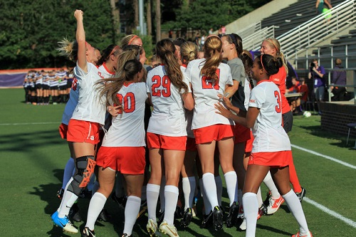

Current News
New Recruits
This year Clemson Womens Soccer recruited nine new players for the 2017 fall and spring seasons. Clemsons first recruit for 2017 was Alex Nillen who came from Wheat Ridge High School as a defender.Clemsons second recuit was Cyan Mercer from Weddington High School as a defender. Clemsons third recuit for was Haley Schueppert from Mountain Vista High SChool as a midfielder. Clemson then recruited Audrey Viso fro, St. Joseph's Academy as a midfielder. Clemsons next recruit was Kimber Haley from Fort Mills High School as a midfielder. Clemson then recruited Abigail Mitchell from Wesleyan High School as a defender. Clemsons next recruit was Mariana Speckmaier from MAST Academy as a forward. Then Clemson recruited Courtney Jones from North Central High School as a forward. As Clemsons final recruit for the 2017 season they recruited Maddie Weber from Coppell High School as a goalkeeper.
Latest Games
In NCAA Second Round Texas Longhorns beat the Clemson tigers in PKs. Clemson was dominant on offense and had a total of 20 shots. The teams were tied at 1-1 after 110 minutes of play. The teams both went into 10 minutes of overtime and stayed tied 1-1. Each team had missed one penalty in the first five rounds of penalty shots resulting in a 4-4 tie. In the sixth round both teams were successful. Then during the seventh round the Longhorns made their shot and the Tigers shot was saved.
| DATE | OPPONENT | LOCATION | RESULTS |
|---|---|---|---|
| Tue, Aug 08 | Air Force | Clemson, S.C. | W, 4-2 |
| Fri, Aug 11 | Duke | Clemson, S.C. | L, 2-1 |
| Fri, Aug 18 | SIUE | Bloomington, Ind. | W, 4-0 |
| Sun, Aug 20 | Indiana | at Bloomington,Ind | W, 1-0 |
| Fri, Aug 25 | Auburn | Clemson, S.C. | W, 2-1 |
| Sun, Aug 27 | UNCG | at Greensboro, N.C. | W, 4-0 |
| Fri, Sept 01 | VCU | Clemson, S.C. | W, 1-0 |
| Sun, Sept 03 | Georgia | at Athens, Ga. | W, 2-0 |
| Fri, Sept 08 | South Carolina | Clemson, S.C. | L, 1-0 |
| Sat, Sept 16 | Notre Dame | Clemson, S.C | L, 4-2 |
| Thu, Sept 21 | North Carolina | at Cary, N.C. (WakeMed Soccer Park) | L, 1-0 |